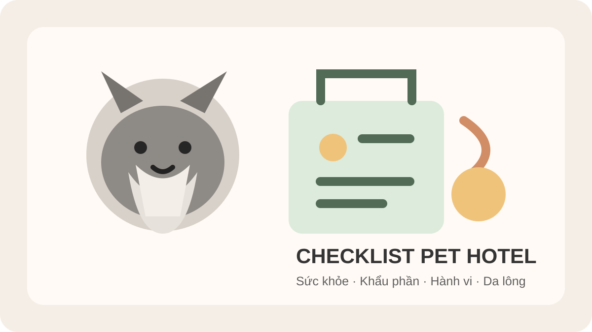

Schnauzer đi khách sạn cần chuẩn bị gì? Checklist trước khi gửi
Trả lời nhanh: trước khi gửi Schnauzer đi khách sạn, hãy chuẩn bị một bản bàn giao ngắn gồm cân nặng thực tế, sức khỏe, khẩu phần, thuốc nếu có, lịch đi vệ sinh, mức vận động, phản ứng với người/chó lạ và tình trạng da-lông. Đừng dựa riêng vào tên giống: nếp sinh hoạt và hành vi của chính bé mới là dữ liệu quan trọng nhất để người chăm tiếp nhận đúng.

Checklist nhanh trước khi Schnauzer đi khách sạn
Hãy ghi lại tuổi, cân nặng hiện tại, tình trạng sức khỏe, thuốc đang dùng nếu có, thức ăn và lượng mỗi bữa, giờ đi vệ sinh, lịch vận động, thói quen ngủ, phản ứng khi xa chủ, phản ứng với người lạ hoặc chó khác và số điện thoại dự phòng. Nếu cơ sở có yêu cầu hồ sơ sức khỏe hay tiêm ngừa, xác nhận trực tiếp trước ngày gửi.
Checklist chung cho mọi giống nằm tại chuẩn bị trước khi gửi thú cưng khách sạn. Bài này bổ sung góc nhìn thực tế cho Schnauzer: mức hoạt động, hành vi cảnh giác và việc giữ phần lông mặt/râu sạch, khô, dễ chăm trong kỳ lưu trú.
1. Ghi sức khỏe cụ thể, không chỉ ghi “bé khỏe”
Báo rõ bệnh nền, dị ứng đã biết, vấn đề tiêu hóa, da-lông, tai, mắt hoặc thuốc đang sử dụng. Nếu bé đang ho, nôn, tiêu chảy, bỏ ăn, lừ đừ hay có dấu hiệu bất thường, nên trao đổi trước với cơ sở và liên hệ bác sĩ thú y khi cần thay vì chờ tới giờ nhận phòng.
Cân nặng thực tế cũng quan trọng vì điều kiện và chi phí lưu trú có thể phụ thuộc vào kích thước/cân nặng. Khi hỏi giá, hãy cung cấp số cân hiện tại thay vì yêu cầu báo giá chỉ theo giống.
2. Giữ khẩu phần quen thuộc và ghi lượng theo bữa
Ghi tên thức ăn, lượng mỗi bữa, số bữa mỗi ngày, món cần tránh và cách bé thường ăn. Nếu Pet Hotel cho phép mang thức ăn riêng, chia sẵn theo từng bữa và dán nhãn sẽ giúp giảm nhầm lẫn. Không nên đổi thức ăn đột ngột ngay trước kỳ lưu trú nếu không có lý do phù hợp.
Nếu Schnauzer từng ăn ít khi đổi môi trường hoặc xa chủ, hãy nói rõ khi bàn giao. Xem thêm chó đi khách sạn bỏ ăn để biết những gì nên theo dõi.
3. Mô tả hành vi và nhu cầu vận động bằng tình huống thật
Thay vì chỉ nói “hiền”, hãy mô tả: bé có sủa khi nghe tiếng lạ không, có kéo dây khi đi dạo không, có giữ thức ăn/đồ chơi, có thoải mái khi gặp người mới, có chơi được với chó khác hay cần không gian riêng. Đây là thông tin có giá trị vận hành hơn việc suy đoán tính cách chỉ từ giống.
Ghi cả lịch vận động quen thuộc. Một bé thường đi bộ hai lần mỗi ngày sẽ có nhịp sinh hoạt khác một bé chỉ vận động nhẹ. Nếu đây là lần đầu lưu trú, tham khảo thêm chó lần đầu đi khách sạn bao lâu thì quen.
4. Kiểm tra da, lông, chân và phần râu trước khi gửi
Schnauzer thường có diện mạo đặc trưng ở phần lông mặt và râu. Trước kỳ lưu trú, mục tiêu không phải tạo kiểu mới mà là bảo đảm lông sạch, khô, không có mảng rối đau; kiểm tra chân, nách, sau tai và vùng ma sát với vòng cổ/harness.
Phần râu có thể ẩm sau khi uống nước hoặc ăn thức ăn ướt, vì vậy hãy báo nếu bé có thói quen cần lau mặt sau ăn. Nếu lông đã rối sát da, không nên tự dùng kéo cắt sát. Có thể tham khảo khi nào cần gỡ rối lông hoặc Grooming chó mèo tại Bình Thạnh.
Có cần grooming ngay trước ngày gửi?
Không có yêu cầu chung rằng Schnauzer phải grooming trước khi vào Hotel. Nếu bé đang đến lịch chăm lông, có thể sắp xếp phù hợp; với bé nhạy cảm, tránh dồn quá nhiều trải nghiệm mới vào cùng một ngày. Quan trọng hơn là bàn giao tình trạng da-lông hiện tại để người chăm biết điểm nào cần chú ý.
5. Đồ dùng: ít nhưng rõ ràng
Hỏi cơ sở những gì được phép mang. Ưu tiên thức ăn đã chia bữa, thuốc có hướng dẫn rõ nếu được tiếp nhận, dây dắt/harness vừa vặn và vật dụng thật sự cần thiết. Ghi tên bé trên từng món. Không cần mang quá nhiều đồ nếu chúng không giúp duy trì nếp sinh hoạt hoặc chăm sóc chính xác.
6. Bàn giao theo một mẫu cố định
Một bản bàn giao tốt có thể chỉ cần một trang: tên bé; tuổi; cân nặng; người liên hệ chính/dự phòng; thức ăn và giờ ăn; thuốc; lịch vệ sinh; lịch vận động; hành vi cần lưu ý; tình trạng da-lông; dấu hiệu nào cần gọi chủ ngay. Cách này giảm phụ thuộc vào trao đổi miệng lúc quầy đông.
Nếu đang cân nhắc cơ sở lưu trú, xem khách sạn chó mèo cần kiểm tra gì và phòng riêng hay phòng chung.
7. Khi đặt phòng cho Schnauzer, nên gửi thông tin gì?
Khi liên hệ Lumi Pet, hãy gửi ngày nhận/trả dự kiến, loại thú cưng, cân nặng hiện tại và các lưu ý sức khỏe/hành vi quan trọng. Xem dịch vụ khách sạn thú cưng Bình Thạnh và dùng trang Đặt phòng để gửi yêu cầu. Giá và khả năng tiếp nhận nên được xác nhận theo thông tin thực tế tại thời điểm đặt, không suy ra từ tên giống.
Câu hỏi thường gặp
Schnauzer đi khách sạn cần chuẩn bị gì?
Cân nặng, sức khỏe, khẩu phần, thuốc nếu có, lịch vệ sinh, vận động, hành vi, tình trạng da-lông và liên hệ dự phòng là nhóm thông tin cốt lõi.
Có cần cắt ngắn lông trước khi gửi?
Không có kiểu cắt bắt buộc chỉ vì sắp lưu trú. Ưu tiên lông sạch, khô, không rối đau và dễ duy trì theo nếp chăm sóc của bé.
Nên mang thức ăn riêng không?
Hãy hỏi chính sách của cơ sở. Nếu được mang, chia sẵn theo bữa và ghi nhãn giúp bàn giao rõ hơn.
Chuẩn bị gửi Schnauzer đi Pet Hotel?
Gửi cân nặng, ngày nhận/trả và các lưu ý của bé để Lumi Pet kiểm tra thông tin phù hợp trước khi đặt phòng.